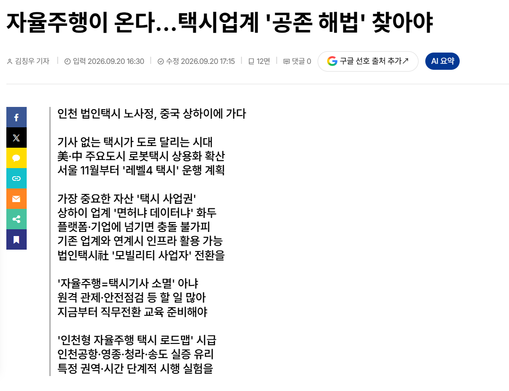

https://www.incheonilbo.com/news/articleView.html?idxno=1332501
슬슬 스타트 끊는듯? 면허 1억2천인게 말이냐

https://www.incheonilbo.com/news/articleView.html?idxno=1332501
슬슬 스타트 끊는듯? 면허 1억2천인게 말이냐
왜 면허를 대대손손 물려주고 사고파는거임 이건 업계관행으로 커버가 안돼
관행이 아니라 이건 허가, 사업권임. 뭐 이상하게 생각하는 거 같은데 사업체 물려주고 사고파는 게 당연히 가능하자.
노가다보다 여기가 레알 좆될거 같다 ㅋㅋ
이제는 분신을 하든 지랄을 하든 그냥 밀고나갔으면 좋겠다
꼬우면 평소에 운전 좀 잘 하고 도로교통법도 좀 지키고 승차거부도 하지 말고 외국인 바가지도 씌우지 말지 그랬어
면허 1억 2천 이런말이 더 이상 현실적으로 느껴지지 않고 메이플 쌀숭이 같아보인다
이제 분신이든 뭐든 도입되면 밀고나갈수밖에 없을 상황이 올것같음
면허를 나라에서 가격정해놓고 정부가 매입할수도 있고
ㄹㅇ 제발 자율주행 도입해라 좆같은 택시기사 한번 만나면 그날 하루가 기분이 좆같음 기사 새끼들 지들이 갑이여서 좆같이 굴어도 뭐 제제할 방법도 없음
1억2천? 요즘 2억 넘는 지역도 많음
세월의 변화 한번 맞아야지 저 업계는
상하이 전부 사람이 운전파던디
택시 바가지같으거 신고하는 문화 확산시키고
1~2회에 바로 정지시키도록하셈
정부입장에선 딸각 한방으로 1억을 번 것이나 다름없는데
여기서 택시업계 죽이라는 애들
택시기사 몇명이 분신자살 함 갈겨주면
바로 포변해서 거 정치인 놈들 살살하지 ㅠ
이럴게 뻔한데 뭘 업계를 박살내 ㅋㅋㅋ
분신자살로 안통할정도로 발전하기때문임 지금 노령 택시 인구들 70퍼는 60대이상이고 10~20년이면 다 죽거나 운전도못하거든 그때쯤이면 자율주행 완성되어있음 필연적이지 분신한다고 안뚫리지않음 핸드폰도 한국만 와이파이 폴더폰 ㅇㅈㄹ 하다가 1~3년뒤에 스마트폰 발전못이겨서 그냥 뚫고 들어왓자나 그런이치지
자율주행이든 뭐든 무분별하게 택시가 늘면 안되니 면허제를 운영하는거고 총량을 통제하니 택시번호판에 프리미엄이 붙는거임. 자율주행시대가 온들 택시 영업권의 총량은 무한대가 되는게 아니고 여전히 가치가 있음. 그런 관점에서 시대가 변하니 택시영업권도 소멸될거란 전망은 좀 비약이 큰데? 말하는거 들어보면 인간이 택시를 운행하는 방식과 택시영업권을 동일시하는게 자꾸보임. 인간이 운행하는 방식은 종식될지언정. 택시의 주인은 한정되어있다.
응 안그래
스마트폰 처음들어왔을떄 통신사가 그걸 막을라고 별짓 다했지만 결국 판도를 스마트폰이 바꾼것처럼
이것도 그냥 판도제차가 흔들리는 거라서 WWE로 안되는 상황일거야 늦출순 있겠는데 결국 바뀔거임
그래도 이미.. 많이 막히고 있는거라고 생각이 들더라... 테슬라 자율주행만 놓고봐도 못쓰게 막고 있는거잖아... 개인의 재산권을 중요시하지는 않는듯.. 기업 보호를 더 중요하게 보는것 같기는 함..
상해에서 자율주행 택시 타보니까 온갖 생각이 다 들더라... 디디로 택시 부르는것마다 전기차량이고..
근데 결국 막다막다가 우리만 고립되서 나중에 맨마지막에 정치인이나 윗분들이
규탄 받는 상황을 우리나라가 안만들꺼임. 적당히 도입 시점 WWE 치다가 어쩔수없다는식으로 자기들
손해보기전에 전면 개방 갑자기 할거같음 ㅋㅋㅋ 거의 사회 전반적인 분야에 걸쳐서 여태까지 일어났던 일이고
드라마에서 진양철 회장이하던 명대사가 있지 "그기 돈이 됩니까?" ㅋㅋㅋ 이 인과에 따라 다정해질듯
우리 기업들 보호도 나쁜건 아닌데 현대차가 자율주행 개발을 너무 안일하게 그냥 둔 느낌임.. 지금 포티투닷 대표 바뀌고나서 속도는 붙은 것 같기는 한데.. 이 상황이 오기까지 아무도 몰랐을까 싶기도 하고 그냥 아쉬움..
분신자살로 3명 돌아가시고 카카오 카풀/타다 금지법/우버 모두 가버렸지
그 씹새들 때문에 외국에 비해서 한참 퇴보함 ㅅㅂ
안그러는디.. 커뮤라 솔직히 말하지만 3명이든 300명이든 3만명이든 죽든 말든 관심 없음.
미국 중국이 훌쩍 앞서나갈거고 우리나라는 발목잡혀서
도태될 것임
근데 면허가 끝나면 끝나는거지 왜저걸 팔수있게만들어 놓은거??
단순 면허가 아니라
차량은 소모품이라는 전제하에
택시 면허=사업장
즉 가게라고 생각하면 편할듯?
그리고 사람들이 1억2천이 비싸다고 할게 아니라 택시같은 개인의 능력의 허들이 낮은 직업의 면허수급이 쉬우면 온갖 취업 안되는 범죄자들 천지가 될텐데 그런 택시 탈수 있을지 생각하면 별로 높은것 같지가 않음
우리 할배되면 손주들한테
옛날에는 택시를 사람이 운전했었다고 얘기해줄듯
택시비가 과연 비싼것인가
시간과 서비스를 녹이는 직업인데 ㅈ같은 기사들이 있긴하다만 유독 택시를 우습게 보며 혐오하는 문화가 자리잡은듯
댓글보면 진짜 심연이 느껴짐
왜 반대하지? 택시 면허가진 사람만 자율주행택시 든 택시든 운영가능한건데 자율주행택시사서 자덩돌리면 개꿀직업아닌가?
근데 이건 버스도 가능한거 아님?
자율주행차 들어오면 바로 빅살나겠지 ㅋㅋㅋ
우버나 타다는 기존 택시면허 지들이 사서 그거 자율택시든 지네택시든 그쪽 면허로 바꾸면 되는거 아닌가? 그냥 살 생각이 없나?
완전자율주행이라고해도 누군가는 책임져야하잖아 회계사도그렇고 변호사도그렇고 약사도그렇고 지금 기술로도 충분히 다 대체가능인데 못하는건 법+사람이하는 역할이 분명히 있기때문, 자율주행=택시기사의무쓸모가 아님 예를들어 센서,카메라에 새똥 묻으면? 소프트웨어 오동작시 수동주행은 누가?(지금 fsd도 비보호좌회전 얼탐) 배터리 불나면 초기대응은누가? 미국샌프란시스코에서 구글웨이모차량에 라바콘올려서 자율주행차 바보만들기놀이 등등 그냥 막생각해도 사람이필요한게 막 나오는데 쉽게생각할 문제는 아님 면허를 차치하고서라도
그럼 이제 돈이 개인이 아닌 기업에 가게 되니까 일자리 ㅈ됐네 사람은 안뽑을 거고 복지대상자는 늘어나고
우버때 날아갔어야하는 직업